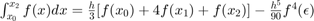
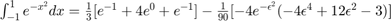

Contents
Objetivos
- Conocer métodos básicos de integracíon numérica
- Manipulación de instrucciones en MATLAB
- Simular convoluciones y correlaciones de señales continuas
- Simular convoluciones y correlaciones de señales discretas
Introducción
Métodos numéricos
 Es el área definida por la gráfica de la función. El teorema fundamental del cálculo dice: que si f es integrable y una anti derivada da como resultado la función f Entonces el numero asociado a la idea geométrica evaluado en el intervalo (a,b) se puede calcular como F(b)- F(a) Para encontrar estas antiderivadas se usan técnicas de integración (cambio de variable, fracciones parciales, sustitución trigonométrica) recordando que toda función continua es integrable.
Es el área definida por la gráfica de la función. El teorema fundamental del cálculo dice: que si f es integrable y una anti derivada da como resultado la función f Entonces el numero asociado a la idea geométrica evaluado en el intervalo (a,b) se puede calcular como F(b)- F(a) Para encontrar estas antiderivadas se usan técnicas de integración (cambio de variable, fracciones parciales, sustitución trigonométrica) recordando que toda función continua es integrable.
De no encontrar la antiderivada, se tiene que tratar de construir un polinomio que al evaluar la función original sean casi la misma altura, e integrar el polinomio que sería casi idéntico a la función original. En integración numérica sustituyes funciones por polinomios e integramos los polinomios
Ejemplo: Integracion Numerica ; la antiderivada F(x) no existe usando métodos de integración entonces utilizamos la aproximación de área mediante los polinomios de Lagrage aproximando P(x) nos queda como un rectángulo entonces P(x)=1 entonces:$\int_{-1}^{1} P(x)dx =\int_{-1}^{1}dx = 2$, Usando software para hacer la integral nos da que e^{-x^2} dx = 1.49365 por lo que nuestra aproximación es correcta con casi .5 de error de aproximación
Formulas cerradas de newton cotes
Se utilizan los polinomios de integración de legrange para aproximar el polinomio a la función original , en lugar de integrar la función integremos el polinomio con el error , estas fórmulas se llaman n más un punto, donde necesitas un punto más del grado del polinomio que se desea
Formula cerrada de (n+1) puntos de Newton Cotes
(punto inicial del intervalo) (punto final del intervalo) (paso) , i=0,1,2,…,n (puntos intermedios del intervalo) donde cada una de estas x son intervalos de las abscisas y h la separación entre ellas
Regla del trapecio (n=1)
, es para un polinomio grado 1. Y sustituyendo los polinomios de lagrange se integra toda la función y se utilizan dos puntos de interpolación en este caso y  grado de precisión……. Se busca que la aproximación tenga error 0 la suma de los 2 terminos que nos da esta regla deben aproximarse al calculo de la integral del polinomio del la formula general
grado de precisión……. Se busca que la aproximación tenga error 0 la suma de los 2 terminos que nos da esta regla deben aproximarse al calculo de la integral del polinomio del la formula general
![$\int_{-1}^{1} e^{-x^2}dx=\frac{2}{2}[e^{-1}+e^{-1}]-\frac{8}{12}[-2e^{-\epsilon^{2}}(1-\epsilon^{2})]$](ASySPrac04CarlosMartinez_eq02137212607852333260.png) ; ; entonces: ; No sabemos el valor de solo que esta entre -1 y 1 la aproximación es buena pero no la mejor.
; ; entonces: ; No sabemos el valor de solo que esta entre -1 y 1 la aproximación es buena pero no la mejor.
Regla de Simpson(n=2)
, para este método necesitamos 3 intervalos y usando una parábola y buscando el área bajo ella para un polinomio de grado 2
; Entoces:$\int_{-1}^{1} e^{-x^2}dx =1.57859 - \frac{2}{45}e^{-\epsilon^{2}}(4\epsilon^{4} -12\epsilon^{2}+3)\\$ Esta aproximación es mejor que la anterior ya que 1.5 es mas cercano a 1.49 que 0.74
Regla de de simpsons (n=3)
;  para grado 3 se necesitan 4 puntos para hacer la aproximación, y las formulas de newton cotes son exactas entonces el error es 0 ya que la cuarta derivada de un polinomio grado 3 es 0
para grado 3 se necesitan 4 puntos para hacer la aproximación, y las formulas de newton cotes son exactas entonces el error es 0 ya que la cuarta derivada de un polinomio grado 3 es 0
\int_{-1}^{1} e^{-x^2}dx = \frac{3}{8}(\frac{2}{3})[e^{-1}+3e^{\frac{1}{3}}+3e^{\frac{1}{3}}+e^{-1}]-\frac{3}{8}(\frac{2}{3})^2[-4e^{-\epsilon^{2}}(-4\epsilon^{4} +12\epsilon^{2}-3)]\\ Entonces:$\int_{-1}^{1} e^{-x^2}dx =1.768- \frac{8}{405}e^{-\epsilon^{2}}(4\epsilon^{4} -12\epsilon^{2}+3)\\$; La aproximación ahora es mas exacta ya que pasa por mas puntos.
Regla compuesta del trapecio
, Es idéntica a la regla del trapecio mencionada antes, solo que en este caso se utilizan múltiples trapecios para aproximar más el valor real de la altura, se manipula el error y el termino de ajuste con lleva la segunda derivada de un numero u entre el intervalo a y b. En este caso la n no es el grado del polinomio si no el número de subintervalos, damos por hecho que aproximamos con polinomios de primer grado Los puntos intermedios se siguen calculando de la misma manera al igual que el paso.
![$\int_{-1}^{1} e^{-x^2}dx = \frac{0.2}{2}[e^{-1}+2\sum_{i=1}^{n-1}e^{-x^2_{i}}+e^{-1}]-\frac{2}{12}(0.2)^2[-2e^{-u^{2}}(1-2u^{2})]; -1<u<1$](ASySPrac04CarlosMartinez_eq17251494051310010725.png) Entonces: ; Entre más trapecios usemos mayor será la aproximación a la función original
Entonces: ; Entre más trapecios usemos mayor será la aproximación a la función original
Regla compuesta de Simpson
; Los puntos medios pares forman parte de 2 parabolas entonces se suman 2 veces en la formula y los impares se consideran 4 veces dada a forma de la formula simple de Simpson, De igual manera n es el numero de subintervalos , el paso y distancia entre subintervalos se calculan de igual manera
\int_{-1}^{1} e^{-x^2}dx = \frac{0.2}{3}[e^{-1}+2\sum_{i=1}^{4}e^{-x^2_{2i}}+4\sum_{i=1}^{5}e^{-x^2_{2i-1}}+e^{-1}]-\frac{2}{180}(0.2)^4[-4e^{-u^{2}}(-4u^{4} +12u^{2}-3)]; -1<u<1$ Entonces: Entre más parábolas usemos mejor será la aproximación.
Cuadratura gaussiana
parámetros Las reglas vistas anteriormente son fórmulas de cuadratura, aproximando la integral con las evaluaciones de la función en determinados puntos con determinadas constantes, el grado de exactitud iba relacionado con que si la función es un polinomio de grado determinado estas fórmulas eran exactas ya que el termino de error se cancelaba Para esta cuadratura usaremos los polinomios de legendre para hacer exacta la aproximación. Dichos polinomios tienen propiedades interesantes y se ocupan entre -1 y 1
Usando el segundo polinomio de legendre , Usando el tercer polinomio de legendre . Tomando las raíces de la tabla de legendre para los grados de cada una de las integrales
Polinomios de grado cero en adelante
Resultado es el polinomio de Legrende de grado n son raíces de (son números reales) entonces ; Se debe evaluar en las raíces de los polinomios de lagrange por las constantes calculadas como se muetra arriba Si son de grado 1,2 o 3 las formulas del trapecio o Simpson son exactas las aproximaciones
Desarrollo
Se plantea la solución a cinco problemas, donde cada uno requiere del uso de Matlab como herramienta de cálculo y análisis.
Ejercicio 1
Para el PR04 reporte la grafica de la simulación númerica de la convolución y compare con el resultado análitico que obtuvo para el problema 1, esto es, su práctica tendrá que incluir una llamada a la funciónn convconm y posteriormente se tendrá que mostrar (mediante el Publish) la gráfica tanto de las señales involucradas como el resultado de la convolución, y en esta última gráficara su resultado analitico, se tendrá que incluir el resultado analitico.
clc; clear; close all; u = @(t) heaviside(t); x = @(t) exp(-t).*(u(t)-u(t-1)); %En programa se implementa --> input('Ingresa la función x(t): '); xl = [0 1];%En programa se implementa --> input('Ingresa los limites de la función x(t): '); h= @(t) t.*(u(t+1)-u(t-1)); %En programa se implementa --> input('Ingresa la función h(t): '); hl=[-1 1]; %En programa se implementa --> input('Ingresa los limites de la función h(t): '); convconm(x,xl,h,hl,u) t1=-1:0.01:0; t2=0:0.01:1; t3=1:0.01:2; t4=-4:0.01:-1; t5=2:0.01:4; subplot(1,2,2); hold on plot(t1,t1-1+2*exp(-t1-1)); plot(t2,t2-1-(t2-2)/exp(1)); plot(t3,-(t3-2)/exp(1)); plot(t4,0); plot(t5,0); legend('y(t) numerico','t','t-1+2*e^(-t-1)','t-1-(t-2)/e','-(t-2)/e')


Ejercicio 2
Para el PR05 reporte la grafica de la simulación númerica de la correalción y compare con el resultado análitico que obtuvo para el problema e), esto es, su práctica tendrá que incluir una llamada a la funciónn convconm y posteriormente se tendrá que mostrar (mediante el Publish) la gráfica tanto de las señales involucradas como el resultado de su correlación, y en esta última graficara su resultado analitico, se tendrá que incluir el resultado analitico.
clc; clear; close all; u = @(t) heaviside(t); h = @(t) u(t)-2*u(t-3)+u(t-4); %En programa se implementa --> input('Ingresa la función x(t): '); xl = [0 4];%En programa se implementa --> input('Ingresa los limites de la función x(t): '); x = @(t) -u(t)+2*u(t+3)-u(t+4); convconm1(x,xl,h,u) t1=-6:0.01:-4; t2=-4:0.01:-3; t3=-3:0.01:-1; t4=-1:0.01:0; t5=0:0.01:1; t6=1:0.01:3; t7=3:0.01:4; t8=4:0.01:6; subplot(1,2,2); hold on plot(t1,0); plot(t2,-(4+t2)); plot(t3,t3+2); plot(t4,3*t4+4); plot(t5,4-3*t5); plot(t6,2-t6); plot(t7,t7-4); plot(t8,0); legend('y(t) numerico','t','0','-(4+t)','t+2','3t+4','4-3t','2-t','t-4','0')


Ejercicio 3
Realice la simuación de la convolución de las señales (c) con (d) del problema 3.1.1
n=0:20; x1=[0 0 0 0 0 0 0 -9 -6 -3 0 3 6 9 0 0 0 0 0 0 0]; x2=[0 0 0 0 0 0 0 0 4 2 0 2 4 0 0 0 0 0 0 0 0]; convdisc([n;x1],[n;x2])
Ejercicio 4
Realice la simuación de la correlación de las señales (c) con (d) del problema 3.1.1
n=0:20; x2=[0 0 0 0 0 0 0 9 6 3 0 -3 -6 -9 0 0 0 0 0 0 0]; x1=[0 0 0 0 0 0 0 0 4 2 0 2 4 0 0 0 0 0 0 0 0]; cordisc([n;x1],[n;-x2])

Ejercicio 5
Realice la la convolución de las señales (c) con (d) del problema 3.1.1 utilizando el comando conv de MATLAB, muestre el código utilizado y gráfique el resultado, sugerencia: Utilice las propiedades de traslación de la convolución.
clc; clear all; close all subplot(3, 1, 1) n1 = [-6 -5 -4 -3 -2 -1 0 1 2 3 4 5 6]; x1 = [0 0 0 -9 -6 -3 0 3 6 9 0 0 0]; stem(n1, x1, 'filled', 'red'); axis([-8 8 -10 10]); set(gca,'Color',[0.945098042488098 0.968627452850342 0.949019610881805], 'XGrid','on','YGrid','on') title('c): x1[n]'); xlabel('n') ylabel('x1[n]') subplot(3, 1, 2) n2 = [-5 -4 -3 -2 -1 0 1 2 3 4 5]; x2 = [0 0 0 4 2 0 2 4 0 0 0]; stem(n2, x2, 'filled', 'green'); axis([-8 8 -2 7]); set(gca,'Color',[0.945098042488098 0.968627452850342 0.949019610881805],'XGrid','on','YGrid','on') title('d): x2[n]'); xlabel('n') ylabel('x2[n]') subplot(3, 1, 3) g = conv (x1, x2); ng = -11:11; stem(ng, g, 'filled', 'magenta'); axis([-15 15 -50 50]); set(gca,'Color',[0.945098042488098 0.968627452850342 0.949019610881805],'XGrid','on','YGrid','on') title('Convolución g[n] = x1[n]*x2[n]'); xlabel('n') ylabel('g[n]')
Apendice A
Puede consultar los codigos de programación de cada uno de los ejercicios en la siguiente carpeta
Referencias
- Lathi, B. (2005). Linear Systems and Signals. E.U.A.: Oxford University Press
- Moore, H. (2009). MATLAB for Engineers. E.U.A.: Prentice Hall.
- Ashok Ambardar. (1999). Analog and Digital Signal Processing. México D. F., México: BROOKS/COLE PUBLISHING COMPANY.
- Hwei P. Hsu. (2013). Señales y Sistemas. México D. F., México: McGrawHill.